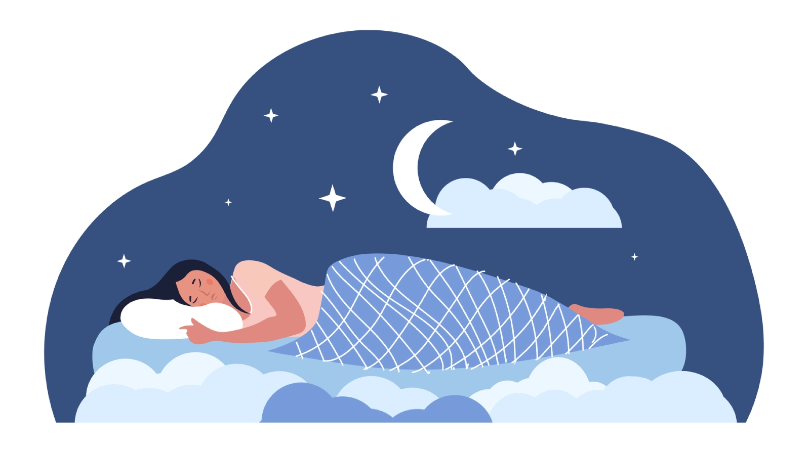
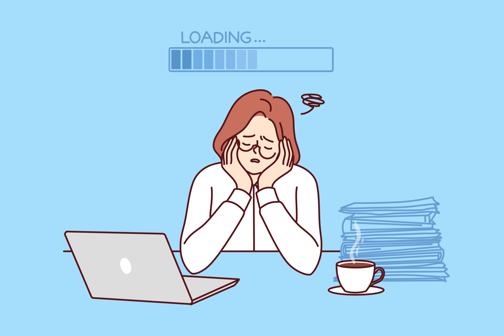
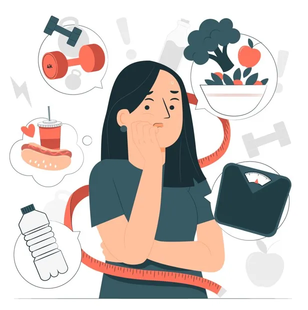

Un recorrido breve por la higiene del sueño: qué es, por qué tu cuerpo la reclama y cómo dormir puede dejar de ser un pendiente más de la lista.
desciende
01 — ¿Qué es?
Higiene del sueño
Es el conjunto de hábitos, rutinas y condiciones del entorno que determinan qué tan bien, y qué tan profundo, duermes cada noche. No se trata solo de "dormir ocho horas", sino de la calidad de esas horas: cuántas veces te despiertas, qué tan rápido caes dormido y cómo te sientes al abrir los ojos.
El cuerpo sigue un reloj interno llamado ritmo circadiano. Cuando ese reloj se desordena, por pantallas, horarios irregulares o luz en el momento equivocado, el sueño deja de cumplir su función reparadora, aunque técnicamente "hayas dormido".

Tenemos que cambiar nuestros hábitos
Tener una buena higiene del sueño significa cambiar sus hábitos de alimentación y actividad física. Unos hábitos de sueño saludables, además de las otras estrategias de sueño, pueden hacer que se sienta más descansado y alerta durante el día.
También puede significar cambiar su entorno del sueño. Si padece insomnio, una buena higiene del sueño puede ser el primer paso para dormir mejor.
02 — Riesgos
¿Qué puede provocar una mala higiene del sueño?
01
Fatiga y somnolencia
Dormir poco o de manera interrumpida puede producir cansancio durante el día, falta de energía, sensación de no haber descansado y episodios de sueño involuntario. La persona puede tardar más en realizar tareas y cometer más errores.

02
Problemas de concentración y memoria
Durante el sueño, el cerebro consolida recuerdos y fortalece conexiones relacionadas con el aprendizaje. La falta de sueño puede dificultar:
Mantener la atención.
Recordar información.
Resolver problemas.
Tomar decisiones.
Reaccionar rápidamente.
Ser creativo.
03
Ansiedad
La privación de sueño aumenta la reactividad emocional y dificulta que el cerebro controle las respuestas ante situaciones estresantes. Estudios experimentales han observado aumentos de ansiedad, angustia general e irritabilidad tras la privación de sueño.
04
Depresión
Los problemas de sueño se relacionan con una mayor probabilidad de presentar síntomas depresivos. La relación es bidireccional: la depresión puede dificultar el sueño y, al mismo tiempo, el insomnio persistente puede aumentar la vulnerabilidad a la depresión. Un metaanálisis de ensayos controlados encontró que mejorar el sueño también puede producir mejoras en la depresión, la ansiedad, el estrés y la salud mental general. Esto no significa que una noche de mal sueño cause automáticamente un trastorno mental: el riesgo aumenta cuando los problemas son frecuentes, prolongados o se combinan con otros factores personales y ambientales.
05
Irritabilidad y cambios de ánimo
La falta de sueño puede dificultar el control de las emociones y provocar:
Irritabilidad.
Impulsividad.
Cambios repentinos de humor.
Menor tolerancia a la frustración.
Dificultad para afrontar cambios.
Conflictos interpersonales.
06
Alteraciones del apetito y del peso
Dormir insuficientemente puede alterar las hormonas que regulan el hambre:
La grelina, que estimula el apetito, puede aumentar.
La leptina, que produce sensación de saciedad, puede disminuir.
Como resultado, la persona puede sentir más hambre y tener mayor facilidad para consumir alimentos de alto contenido calórico.

07
Diabetes y problemas metabólicos
La deficiencia de sueño puede reducir la sensibilidad del cuerpo a la insulina, hormona que permite que la glucosa entre en las células. Esto puede mantener niveles de azúcar más elevados y, con el tiempo, aumentar el riesgo de diabetes tipo 2.
08
Problemas cardiovasculares
Dormir mal de forma continua se relaciona con mayor riesgo de:
Presión arterial alta.
Enfermedad cardíaca.
Accidente cerebrovascular.
Obesidad.
Alteraciones del metabolismo.
09
Debilitamiento del sistema inmunitario
El sueño contribuye a regular las defensas del organismo. La privación de sueño puede alterar la actividad de células inmunitarias, reducir algunas respuestas de anticuerpos y aumentar sustancias inflamatorias, como ciertas interleucinas, el factor de necrosis tumoral y la proteína C reactiva. Esto puede dificultar la respuesta frente a infecciones y favorecer inflamación persistente.
10
Accidentes y bajo rendimiento
La falta de sueño aumenta el tiempo de reacción y puede causar microsueños: episodios muy breves en los que el cerebro se duerme sin que la persona lo note. Esto representa un peligro al conducir, utilizar maquinaria o realizar actividades que requieran atención constante.
03 — Hábitos
Cómo cuidarla
No hace falta cambiar tu vida entera. Seis ajustes pequeños, sostenidos en el tiempo, hacen la mayor diferencia.
Horario fijo
Acuéstate y despierta a la misma hora todos los días, incluidos los fines de semana. El cuerpo aprende el ritmo por repetición.
Apaga las pantallas
Evita el celular o la TV entre 30 y 60 minutos antes de dormir: la luz azul retrasa la liberación de melatonina.
Ambiente ideal
Un cuarto oscuro, fresco (entre 18 y 20 °C) y silencioso facilita entrar y mantenerse en sueño profundo.
Cuidado con la cafeína
Café, té y bebidas con cafeína después de media tarde pueden seguir activos en el cuerpo ocho horas después.
Muévete de día
El ejercicio regular mejora la calidad del sueño, pero conviene evitarlo justo antes de acostarte.
Rutina relajante
Leer, respirar profundo o estirar suavemente le indican al cuerpo que ya puede empezar a soltarse.
Datos y recursos
Dos corrientes de fichas, cada una moviéndose en su propia dirección. Pasa el cursor para detenerlas y leer con calma.
Video para profundiza mas en el tema
Un breve video para complementar la información sobre hábitos saludables de descanso.
05 — Agradecimientos
Gracias por llegar hasta el final
Este sitio nació como una práctica virtual de diseño colaborativo de un recurso web educativo. Agradecemos la guía recibida durante todo el proceso, que nos permitió tomar un tema de salud cotidiano —la higiene del sueño— y presentarlo de una forma clara tanto para curiosos ocasionales como para quienes buscan cambiar hábitos concretos.
Gracias también a quienes probaron el sitio, dieron su opinión sobre el diseño y compartieron sus propias historias de trasnochadas: ustedes fueron la inspiración real detrás de cada sección.
Equipo
Elaborado por: [nombres del equipo aquí]
Con agradecimiento especial a: [profesor(a) aquí]
Universidad Tecnológica de Panamá — Práctica virtual
Buenas noches, en serio
Dormir bien no es un lujo ni una recompensa por un día productivo: es la base sobre la que se sostiene todo lo demás. Empieza por un solo hábito de esta lista esta noche.